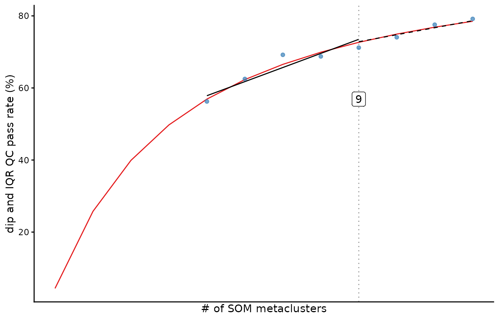
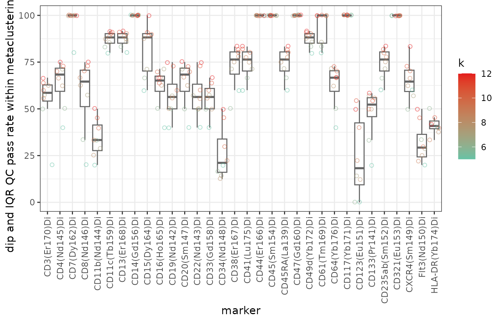

fastINFLECT scans the cluster counts you request, scores marker
distributions within each partition, and reports candidate values of
k. The candidate values guide inspection. The retained
cluster-by-marker evidence supports the final interpretation.
Run an analysis
To obtain these candidate values and retained evidence, start with a completed FlowSOM or kohonen SOM. The example below uses the downsampled Levine32 FlowSOM object included with fastINFLECT.
load(system.file(
"extdata",
"Levine32sample.Rdata",
package = "fastINFLECT"
))
schedule <- 5:12
result <- INFLECT(
FlowSOM.results = dataset,
set.i = schedule,
uniform.test = "both",
zeroes.in = TRUE,
multicore = FALSE
)set.i is literal. The call above evaluates every integer
from 5 through 12 and stores a partition for each one. Supply at least
five unique, increasing integers, with no value above the number of SOM
nodes. Use inflect_adaptive_set_i() when you want a denser
low-k schedule with a fixed upper bound.
| Argument | Use |
|---|---|
uniform.test = "both" |
Build the aggregate from pairs that pass both dip and IQR criteria |
uniform.test = "unimodality" |
Build the aggregate from the dip criterion |
uniform.test = "spread" |
Build the aggregate from the IQR criterion |
zeroes.in = TRUE |
Retain all finite transformed values |
only.clustering.markers = FALSE |
Evaluate the names supplied in acquired_markers
|
multicore = TRUE, cores = 2L |
Use two workers on platforms with fork support |
For event sampling, the default analysis uses all events. Treat
max.events.per.node and max.n.diptest as
sensitivity-analysis controls. Compare several caps and seeds before
using a sampled result.
Read candidate values
After the analysis completes, print the result for a compact view of the run and its candidate values. The plot shows how the selected QC pass rate changes across the tested schedule.
result
#> fastINFLECT result
#> knee: 9
#> range: 12
#> angle: 12.88413
#> tested k values: 8
#> tested k range: 5-12
#> markers: 32
#> provenance: uniform.test=both, zeroes.in=TRUE
#> k estimates and tested thresholds:
#> inflection k=9 (71.2% QC pass) [tested_partition]
#> kneedle k=7 (69.2% QC pass) [tested_partition]
#> threshold k=NA [not_available]
plot(result)
The tested scores and candidate table are available as data frames.
as.data.frame(result)
#> k qc_pass_rate criterion
#> 1 5 56.25000 combined
#> 2 6 62.50000 combined
#> 3 7 69.19643 combined
#> 4 8 68.75000 combined
#> 5 9 71.18056 combined
#> 6 10 74.06250 combined
#> 7 11 77.55682 combined
#> 8 12 79.16667 combined
result$selection[c(
"method",
"k",
"qc_pass_rate_at_k",
"partition_available",
"k_status"
)]
#> method k qc_pass_rate_at_k partition_available k_status
#> 1 inflection 9 71.18056 TRUE tested_partition
#> 2 kneedle 7 69.19643 TRUE tested_partition
#> 3 threshold NA NA FALSE not_available| Method | Interpretation |
|---|---|
inflection |
Bend in the fitted diagnostic curve |
kneedle |
Largest observed departure from a straight-line increase |
threshold |
Smallest tested k that reaches target
|
Candidate rows are diagnostic summaries, not a ranking. The example
below uses the directly tested inflection candidate only to demonstrate
inspection; it is not a default recommendation. A row with
partition_available = TRUE was directly tested and has an
entry in metaclustering.list. If a finite candidate was not
directly tested, inspect k_status, add its k
to a new set.i schedule, and rerun before inspection.
Candidate methods that happen to return the same k are not
independent confirmation.
Inspect marker-level evidence
Name the candidate method, require one matching directly tested row, and use its character value as the list key. Each pass matrix has one row per metacluster and one column per marker.
candidate_method <- "inflection"
candidate <- result$selection[
result$selection$method == candidate_method,
,
drop = FALSE
]
if (nrow(candidate) != 1L) {
stop("Expected exactly one inflection candidate.", call. = FALSE)
}
if (!isTRUE(candidate$partition_available[[1L]])) {
stop(
"Inspect `k_status`; if the candidate k is finite, add it to `set.i` and rerun.",
call. = FALSE
)
}
candidate_k <- candidate$k[[1L]]
key <- as.character(candidate_k)
if (!key %in% names(result$metaclustering.list)) {
stop("The directly tested candidate partition is missing.", call. = FALSE)
}
candidate[c("method", "k", "qc_pass_rate_at_k", "partition_available", "k_status")]
#> method k qc_pass_rate_at_k partition_available k_status
#> 1 inflection 9 71.18056 TRUE tested_partition
partition <- result$metaclustering.list[[key]]
partition_map <- data.frame(
som_node = seq_along(partition),
metacluster = unname(partition)
)
head(partition_map)
#> som_node metacluster
#> 1 1 1
#> 2 2 1
#> 3 3 1
#> 4 4 1
#> 5 5 1
#> 6 6 1
table(partition_map$metacluster)
#>
#> 1 2 3 4 5 6 7 8 9
#> 48 6 93 23 96 26 36 39 8
criterion_summary <- result$provenance$criterion_summary
selected_criterion_summary <- criterion_summary[
criterion_summary$k == candidate_k & criterion_summary$selected,
c("k", "criterion", "passed", "failed", "unresolved", "total", "qc_pass_rate"),
drop = FALSE
]
if (nrow(selected_criterion_summary) != 1L) {
stop("Expected exactly one selected criterion summary.", call. = FALSE)
}
selected_criterion_summary
#> k criterion passed failed unresolved total qc_pass_rate
#> 15 9 combined 205 83 0 288 71.18056
result$criterion_pass[[key]][1:5, 1:5]
#> CD3(Er170)Di CD4(Nd145)Di CD7(Dy162)Di CD8(Nd146)Di CD11b(Nd144)Di
#> 1 TRUE FALSE TRUE TRUE FALSE
#> 2 FALSE TRUE TRUE TRUE TRUE
#> 3 TRUE FALSE TRUE FALSE FALSE
#> 4 TRUE TRUE TRUE TRUE TRUE
#> 5 FALSE FALSE TRUE FALSE FALSE
result$dip_pass[[key]][1:5, 1:5]
#> CD3(Er170)Di CD4(Nd145)Di CD7(Dy162)Di CD8(Nd146)Di CD11b(Nd144)Di
#> 1 TRUE FALSE TRUE TRUE FALSE
#> 2 FALSE TRUE TRUE TRUE TRUE
#> 3 TRUE FALSE TRUE FALSE FALSE
#> 4 TRUE TRUE TRUE TRUE TRUE
#> 5 FALSE FALSE TRUE FALSE FALSE
result$iqr_pass[[key]][1:5, 1:5]
#> CD3(Er170)Di CD4(Nd145)Di CD7(Dy162)Di CD8(Nd146)Di CD11b(Nd144)Di
#> 1 TRUE TRUE TRUE TRUE TRUE
#> 2 FALSE TRUE TRUE TRUE TRUE
#> 3 TRUE TRUE TRUE TRUE TRUE
#> 4 TRUE TRUE TRUE TRUE TRUE
#> 5 TRUE TRUE TRUE TRUE TRUE
result$combined_pass[[key]][1:5, 1:5]
#> CD3(Er170)Di CD4(Nd145)Di CD7(Dy162)Di CD8(Nd146)Di CD11b(Nd144)Di
#> 1 TRUE FALSE TRUE TRUE FALSE
#> 2 FALSE TRUE TRUE TRUE TRUE
#> 3 TRUE FALSE TRUE FALSE FALSE
#> 4 TRUE TRUE TRUE TRUE TRUE
#> 5 FALSE FALSE TRUE FALSE FALSEThis is an inspected candidate partition, not a scientifically
selected partition. Positions are SOM nodes and values are nominal
metacluster labels. The table counts SOM nodes, not events or cells.
Labels are not ordered scores and must not be compared numerically
across different values of k.
criterion_pass[[key]] is the matrix used to calculate
qc_pass_rate. It equals dip_pass[[key]] for
uniform.test = "unimodality", iqr_pass[[key]]
for "spread", and combined_pass[[key]] for
"both". TRUE passed the recorded threshold,
FALSE did not, and NA means that the selected
decision was unavailable. Under "both", a definitive
component failure can determine FALSE even if the other
component is unresolved, so inspect the component matrices and
failure_reason as well.
qc_pass_rate is 100 * passed / total over
the metacluster-by-marker matrix selected by uniform.test;
unresolved (NA) decisions remain in total.
Because k, cluster event counts, and test behavior change
across candidates, compare passed, failed,
unresolved, and total. A higher rate means
only that a larger fraction passed. It does not imply fewer absolute
failures or that a partition is preferable or biologically valid.
Interpret the screening evidence within these limits:
- Dip-test non-rejection means no detected multimodality at the recorded threshold, not proof of unimodality.
- IQR is a spread screen, not a unimodality test.
- Per-pair thresholds are not multiplicity-controlled inference.
- Increasing
kchanges group sizes and test behavior, so a rising curve is diagnostic rather than evidence that largerkis biologically better.
details <- result$qc.details[[key]]
details$dip_p_value[1:5, 1:5]
#> CD3(Er170)Di CD4(Nd145)Di CD7(Dy162)Di CD8(Nd146)Di CD11b(Nd144)Di
#> 1 0.9942201458 0.0002713102 0.9873774 0.991133473 0.002759089
#> 2 0.0000000000 0.4085785852 0.9906014 0.686300759 0.569989988
#> 3 0.9293776443 0.0000000000 0.9513538 0.000033003 0.000000000
#> 4 0.1251159356 0.2661728135 0.9980218 0.974318468 0.300653962
#> 5 0.0004518359 0.0003636308 0.4506221 0.001991071 0.000000000
details$iqr[1:5, 1:5]
#> CD3(Er170)Di CD4(Nd145)Di CD7(Dy162)Di CD8(Nd146)Di CD11b(Nd144)Di
#> 1 0.8566725 0.2382634 1.70326701 0.8563761 0.4517324
#> 2 4.4798380 0.5393102 1.01360329 1.4872751 1.1631696
#> 3 0.8918539 0.9669128 1.76956461 0.2957914 0.3571555
#> 4 0.3293855 0.1539406 1.49905356 0.6288621 0.7997717
#> 5 0.4021029 0.3683224 0.08655342 0.1506214 1.8180357
table(details$failure_reason, useNA = "ifany")
#>
#> <NA>
#> 288Use marker summaries next to check whether a small set of markers drives the aggregate curve.
marker_qc <- marker.performance(result)
head(marker_qc$marker.dataframe)
#> k marker qc_pass_rate i Marker Performance
#> 1 5 CD3(Er170)Di 20.00000 5 CD3(Er170)Di 20.00000
#> 2 6 CD3(Er170)Di 50.00000 6 CD3(Er170)Di 50.00000
#> 3 7 CD3(Er170)Di 57.14286 7 CD3(Er170)Di 57.14286
#> 4 8 CD3(Er170)Di 62.50000 8 CD3(Er170)Di 62.50000
#> 5 9 CD3(Er170)Di 55.55556 9 CD3(Er170)Di 55.55556
#> 6 10 CD3(Er170)Di 60.00000 10 CD3(Er170)Di 60.00000
marker_qc$plot
Report the result
After inspecting the marker-level evidence, record the settings that define the run before reporting a candidate. The provenance includes the schedule, marker panel, criterion, thresholds, value handling, sampling, seed, and worker backend.
result$provenance[c(
"set.i",
"markers",
"uniform.test",
"th.pvalue",
"th.IQR",
"zeroes.in",
"max.events.per.node",
"seed"
)]
#> $set.i
#> [1] 5 6 7 8 9 10 11 12
#>
#> $markers
#> [1] "CD3(Er170)Di" "CD4(Nd145)Di" "CD7(Dy162)Di" "CD8(Nd146)Di"
#> [5] "CD11b(Nd144)Di" "CD11c(Tb159)Di" "CD13(Er168)Di" "CD14(Gd156)Di"
#> [9] "CD15(Dy164)Di" "CD16(Ho165)Di" "CD19(Nd142)Di" "CD20(Sm147)Di"
#> [13] "CD22(Nd143)Di" "CD33(Gd158)Di" "CD34(Nd148)Di" "CD38(Er167)Di"
#> [17] "CD41(Lu175)Di" "CD44(Er166)Di" "CD45(Sm154)Di" "CD45RA(La139)Di"
#> [21] "CD47(Gd160)Di" "CD49d(Yb172)Di" "CD61(Tm169)Di" "CD64(Yb176)Di"
#> [25] "CD117(Yb171)Di" "CD123(Eu151)Di" "CD133(Pr141)Di" "CD235ab(Sm152)Di"
#> [29] "CD321(Eu153)Di" "CXCR4(Sm149)Di" "Flt3(Nd150)Di" "HLA-DR(Yb174)Di"
#>
#> $uniform.test
#> [1] "both"
#>
#> $th.pvalue
#> [1] 0.05
#>
#> $th.IQR
#> [1] 2
#>
#> $zeroes.in
#> [1] TRUE
#>
#> $max.events.per.node
#> [1] NA
#>
#> $seed
#> [1] 1Use language that matches the evidence:
| Result | Report as |
|---|---|
High qc_pass_rate
|
A larger fraction passed the selected QC criterion; report the counts |
dip_pass = FALSE |
The dip test detected evidence against unimodality at the recorded threshold |
iqr_pass = FALSE |
The marker IQR met or exceeded the recorded spread threshold |
dip_pass = TRUE |
No multimodality was detected by this dip test |
Candidate k
|
A diagnostic candidate that still requires stability and biological review |
A criterion pass is a screening result. It does not prove
unimodality, multivariate cluster homogeneity, or biological validity.
Report the selected criterion and thresholds, confirm that the partition
was directly tested, and describe marker-level failures or unresolved
measurements alongside the chosen k.